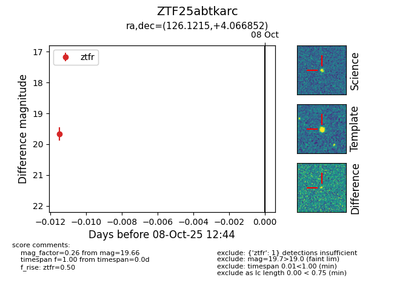

FINK: ZTF25abtkarc
Lasair: ZTF25abtkarc
ALeRCE: ZTF25abtkarc
ZTF25abtkarc (ztf,fink)
equatorial (ra, dec) = (126.1215,+4.06685)
galactic (l, b) = (220.1778,+22.51609)

last ztfr=19.66
1 ztfr detections